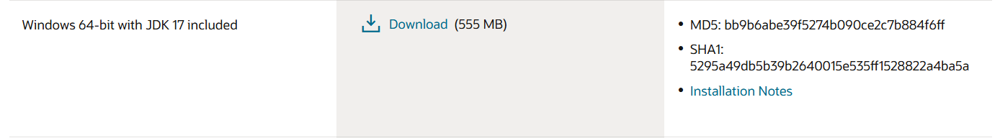
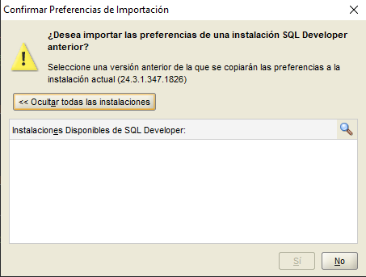
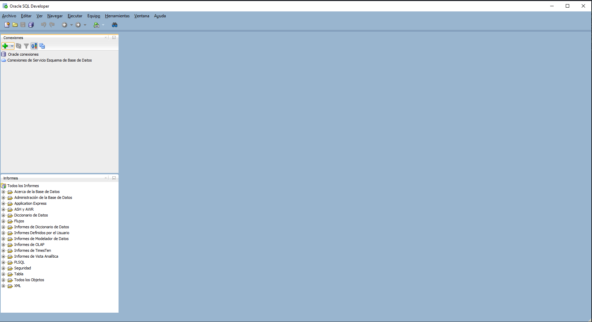

Nos metemos en la pagina web oficial de Sql Developer para descargar el software 
Para empezar a instalar buscamos el archivo sqldeveloper.exe
Nos preguntará si queremos importar alguna configuración de SQL Developer, en nuestro caso no tenemos 
Ya tenemos instalado SQL Developer en tres pasos 